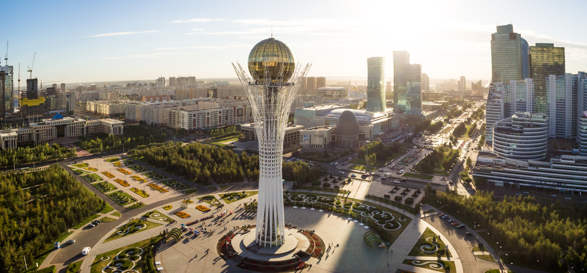
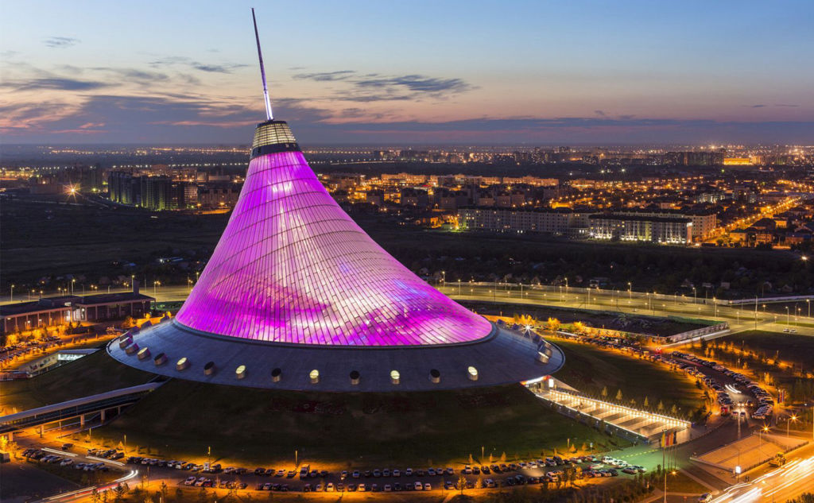
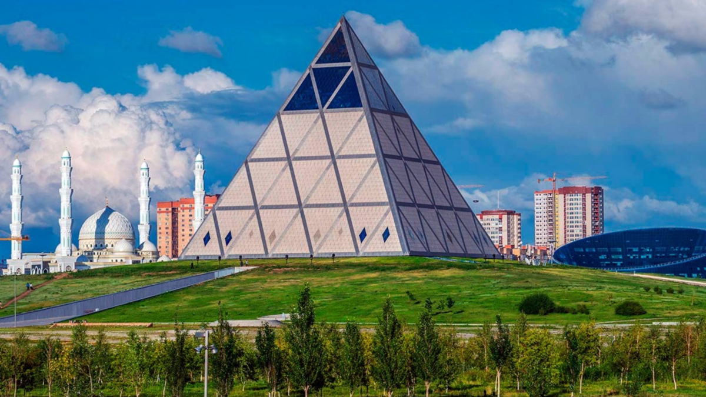

Bayterek Tower
The Bayterek Tower is a symbol of Astana, offering stunning views of the city. "Bayterek" in Kazakh means "High poplar tree". Its architectural design is inspired by an ancient Turkic myth about a tree of life and a sacred bird: every year the bird, named Samruk, lays its egg (the Sun) in the crevice between the branches of the poplar tree. Bayterek is considered a symbol of modern Kazakhstan. Having visited this unique tower, you will never be able to forget the indescribable atmosphere of this place.
HOW TO GET THERE
taxi or bus
Khan Shatyr Entertainment Center
Khan Shatyr is a futuristic shopping and entertainment center with a unique design. The name "Khan Shatyr" emerged as a result of merging of two important terms in Kazakh history. "Khan" is a designation - the title of the ruler among Turkic peoples, "Shatyr" is a medieval accommodation. The Khan Shatyr designed by renowned British architect Norman Foster is the largest tented building in the world and also the largest unique-looking shopping center in Kazakhstan.
HOW TO GET THERE
taxi or bus
Expo 2017 Complex
The Expo 2017 complex showcases cutting-edge architecture and sustainability. After hosting Expo 2017, the city has developed into a hub for technology and sustainable development. The Nur Alem Sphere now serves as the Museum of Future Energy, attracting visitors interested in energy solutions and sustainability.
HOW TO GET THERE
taxi or bus
Palace of Peace and Reconciliation
The Palace of Peace and Reconciliation, also known as the Pyramid, symbolizes unity and peace. The exceptional building, built by the celebrated British architect Norman Foster, includes a conference hall, a concert hall, an art gallery, and many more. The Palace of Peace expresses the essence of Kazakhstan, where cultures, and various nationalities coexist in peace, harmony and accord.
HOW TO GET THERE
taxi or bus
Ak Orda Presidential Palace

Ak Orda is the official residence of the President of Kazakhstan, showcasing beautiful modern architecture. It serves as the administrative center of the President of Kazakhstan and is a symbol of the country's political power. The palace was completed in 2004 and is known for its impressive neoclassical architecture, featuring a blue dome and grand columns. Ak Orda is a key landmark in the city and hosts important state functions and official ceremonies. The name "Ak Orda" means "White Horde," referring to a historic Kazakh khanate.
HOW TO GET THERE
This is a protected place, unfortunately you cannot go there
Central Park

Central Park is a green oasis in the heart of the city, perfect for relaxing and enjoying nature. It features walking paths, fountains, lakes, and a variety of trees and plants, making it a popular spot for both locals and tourists. The park also includes playgrounds, cafes, and areas for outdoor activities, providing a peaceful escape from the city's bustle. Central Park is a key part of the city's urban landscape and is frequently used for cultural events and public gatherings.
HOW TO GET THERE
taxi or bus